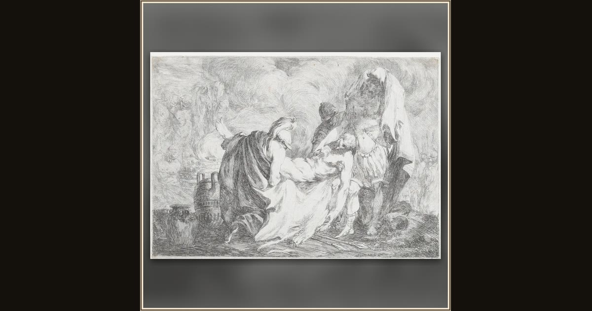

Patroclus being carried to his funeral pyre as Achilles places a lock of hair on the body
Johann Tobias Sergel · ca. 1766 · met
Patroclus is carried to his funeral pyre as Achilles places a lock of his hair on the body, the gift he had once vowed to the river Spercheus (23.140–153). Explore its place in Homer's Iliad, Book XXIII, line 152.